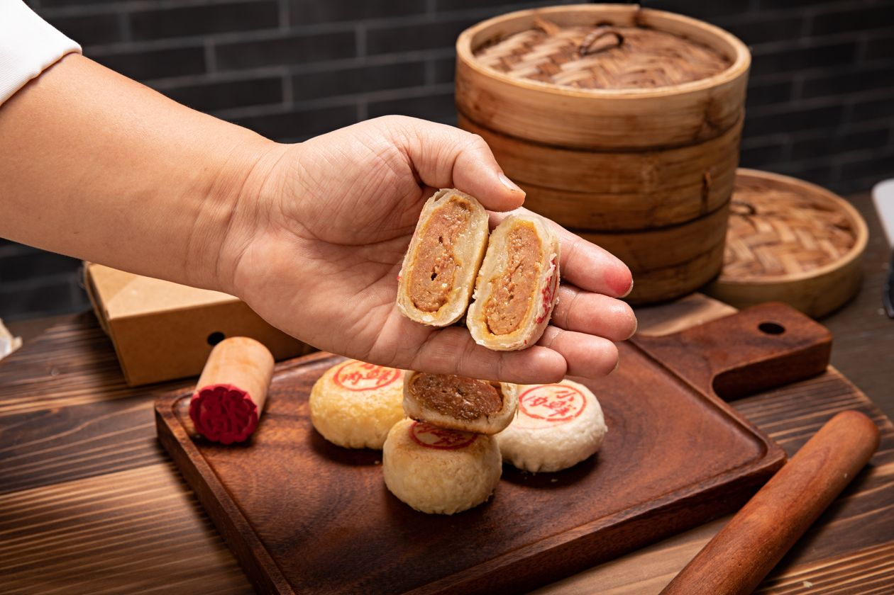

Contact · One way in
Write to the bakery. I answer myself.
There is no sales team and no ticket system. Fill in the short form, or write straight to meilin@tan-mooncakes.example. In season I answer the same evening; out of season, within two days.
In the order book
MY-2027-0000
Thank you. Your note is with the bakery.
Keep the reference — quote it when you write again and I will find your page in the book at once. If your date cannot be done, my reply will say so plainly and offer the nearest date that can.

The shop
14 Lebuh Carnarvon
George Town, Penang. Collection only — come to the counter, give your name, and your boxes come out of the back room. In season the queue starts before we open; bring the reference from your confirmation.
The dates that matter
2027 season
Book opens Sun 1 Aug · first cakes ready Thu 5 Aug · book closes Wed 8 Sep · last bake Sat 11 Sep · last collection Tue 14 Sep · festival Wed 15 Sep 2027. After the festival the oven bakes other things, and the mooncake book shuts until 2028.
Too late for 2027?
The 2028 list
It happens every year: somebody writes on 13 September. If that is you, choose “Put me first on the 2028 list” in the form. Your name goes on the first page of next year's book, and you will hear from me before the book opens — not after it fills.